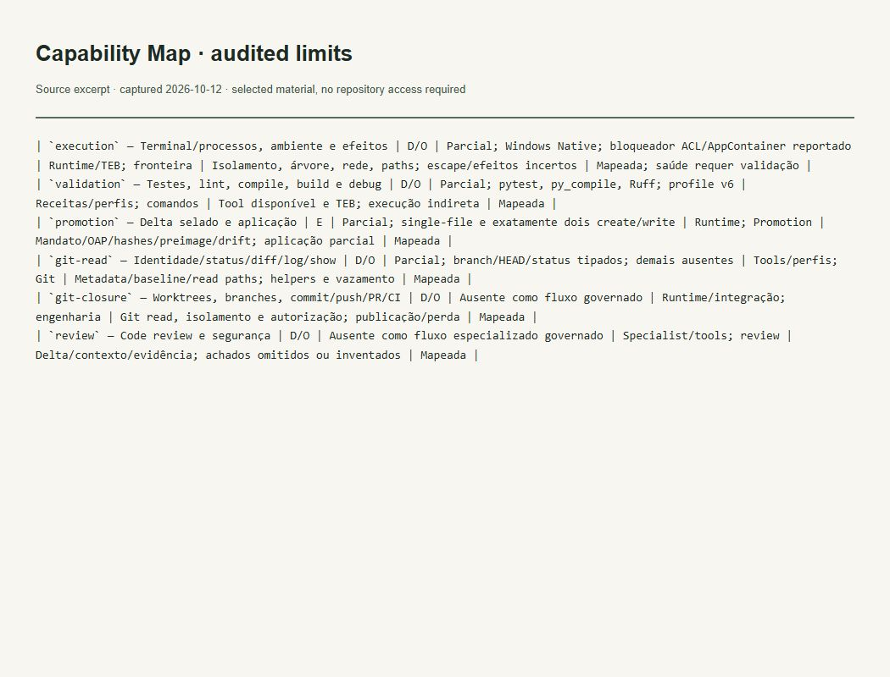

Evidências do trabalho
Escopo implementado e limites documentados
O que esta evidência demonstra
Registra capacidades parciais de execução, promoção e Git, sem alegar paridade integral.

Ler transcrição literal acessível
| `execution` — Terminal/processos, ambiente e efeitos | D/O | Parcial; Windows Native; bloqueador ACL/AppContainer reportado | Runtime/TEB; fronteira | Isolamento, árvore, rede, paths; escape/efeitos incertos | Mapeada; saúde requer validação | | `validation` — Testes, lint, compile, build e debug | D/O | Parcial; pytest, py_compile, Ruff; profile v6 | Receitas/perfis; comandos | Tool disponível e TEB; execução indireta | Mapeada | | `promotion` — Delta selado e aplicação | E | Parcial; single-file e exatamente dois create/write | Runtime; Promotion | Mandato/OAP/hashes/preimage/drift; aplicação parcial | Mapeada | | `git-read` — Identidade/status/diff/log/show | D/O | Parcial; branch/HEAD/status tipados; demais ausentes | Tools/perfis; Git | Metadata/baseline/read paths; helpers e vazamento | Mapeada | | `git-closure` — Worktrees, branches, commit/push/PR/CI | D/O | Ausente como fluxo governado | Runtime/integração; engenharia | Git read, isolamento e autorização; publicação/perda | Mapeada | | `review` — Code review e segurança | D/O | Ausente como fluxo especializado governado | Specialist/tools; review | Delta/contexto/evidência; achados omitidos ou inventados | Mapeada |
Contexto e limites
Auditoria documental datada; comportamento operacional atual exige evidência própria.
A imagem é uma captura local de um recorte literal do arquivo verificado. Não é captura da interface do GitHub nem da aplicação em execução. O trecho permanece no idioma original.